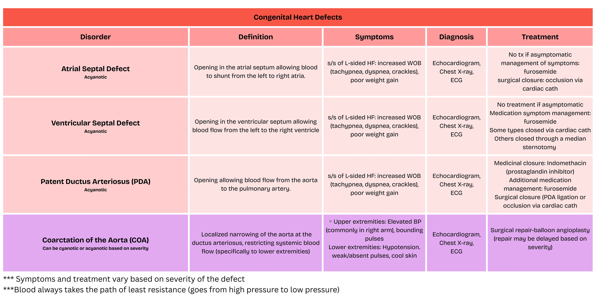
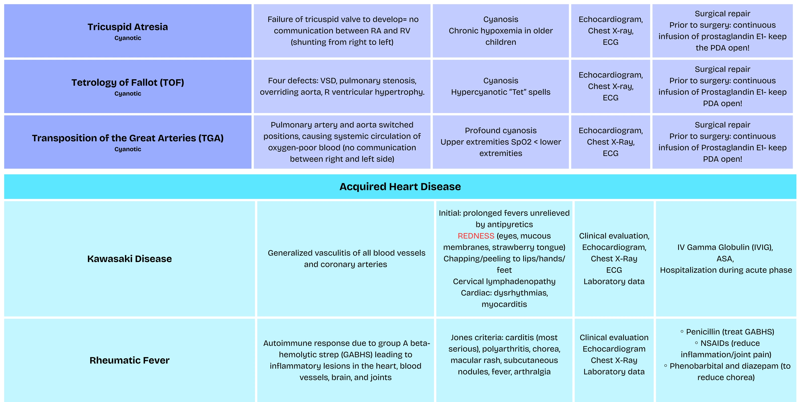

🫀 Cardiac · NUR 235 course collection
Pediatric cardiology reference
The supplied reference is already filled. Both identical original downloads are retained.
Downloads · original files preserved
1 / 2 Congenital Heart Defects

Original selectable text
Exact extraction; text embedded inside pictures remains in the full-size original visual.
Congenital Heart Defects Disorder Definition Symptoms Diagnosis Treatment Atrial Septal Defect Acyanotic Opening in the atrial septum allowing blood to shunt from the left to right atria. s/s of L-sided HF: increased WOB (tachypnea, dyspnea, crackles), poor weight gain Echocardiogram, Chest X-ray, ECG No tx if asymptomatic management of symptoms: furosemide surgical closure: occlusion via cardiac cath Ventricular Septal Defect Acyanotic Opening in the ventricular septum allowing blood flow from the left to the right ventricle s/s of L-sided HF: increased WOB (tachypnea, dyspnea, crackles), poor weight gain Echocardiogram, Chest X-ray, ECG No treatment if asymptomatic Medication symptom management: furosemide Some types closed via cardiac cath Others closed through a median sternotomy Patent Ductus Arteriosus (PDA) Acyanotic Opening allowing blood flow from the aorta to the pulmonary artery. s/s of L-sided HF: increased WOB (tachypnea, dyspnea, crackles), poor weight gain Echocardiogram, Chest X-ray, ECG Medicinal closure: Indomethacin (prostaglandin inhibitor) Additional medication management: furosemide Surgical closure (PDA ligation or occlusion via cardiac cath Coarctation of the Aorta (COA) Can be cyanotic or acyanotic based on severity Localized narrowing of the aorta at the ductus arteriosus, restricting systemic blood flow (specifically to lower extremities) ◦ Upper extremities: Elevated BP (commonly in right arm), bounding pulses Lower extremities: Hypotension. weak/absent pulses, cool skin Echocardiogram, Chest X-ray, ECG Surgical repair-balloon angioplasty (repair may be delayed based on severity) *** Symptoms and treatment vary based on severity of the defect ***Blood always takes the path of least resistance (goes from high pressure to low pressure)
Already-completed reference; original content retained.
2 / 2 Tricuspid Atresia

Original selectable text
Exact extraction; text embedded inside pictures remains in the full-size original visual.
Tricuspid Atresia Cyanotic Failure of tricuspid valve to develop= no communication between RA and RV (shunting from right to left) Cyanosis Chronic hypoxemia in older children Echocardiogram, Chest X-ray, ECG Surgical repair Prior to surgery: continuous infusion of prostaglandin E1- keep the PDA open! Tetrology of Fallot (TOF) Cyanotic Four defects: VSD, pulmonary stenosis, overriding aorta, R ventricular hypertrophy. Cyanosis Hypercyanotic “Tet” spells Echocardiogram, Chest X-ray, ECG Surgical repair Prior to surgery: continuous infusion of Prostaglandin E1- keep PDA open! Transposition of the Great Arteries (TGA) Cyanotic Pulmonary artery and aorta switched positions, causing systemic circulation of oxygen-poor blood (no communication between right and left side) Profound cyanosis Upper extremities SpO2 < lower extremities Echocardiogram, Chest X-Ray, ECG Surgical repair Prior to surgery: continuous infusion of Prostaglandin E1- keep PDA open! Acquired Heart Disease Kawasaki Disease Generalized vasculitis of all blood vessels and coronary arteries Initial: prolonged fevers unrelieved by antipyretics REDNESS (eyes, mucous membranes, strawberry tongue) Chapping/peeling to lips/hands/ feet Cervical lymphadenopathy Cardiac: dysrhythmias, myocarditis Clinical evaluation, Echocardiogram, Chest X-Ray ECG Laboratory data IV Gamma Globulin (IVIG), ASA, Hospitalization during acute phase Rheumatic Fever Autoimmune response due to group A beta- hemolytic strep (GABHS) leading to inflammatory lesions in the heart, blood vessels, brain, and joints Jones criteria: carditis (most serious), polyarthritis, chorea, macular rash, subcutaneous nodules, fever, arthralgia Clinical evaluation Echocardiogram Chest X-Ray Laboratory data ◦ Penicillin (treat GABHS) ◦ NSAIDs (reduce inflammation/joint pain) ◦ Phenobarbital and diazepam (to reduce chorea)
Already-completed reference; original content retained.